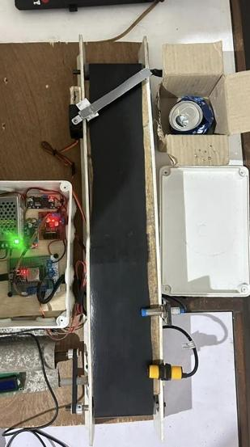
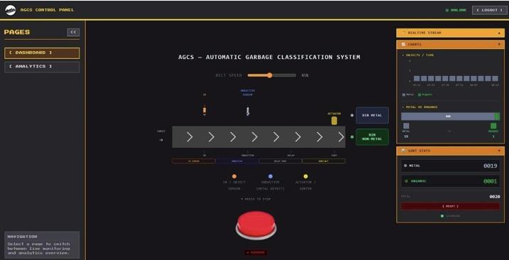
Automatic Garbage Collection System (AGCS) based on IoT
A prototype waste-sorting system built for a course project. ESP32 and sensors tell metal from non-metal waste, and a real-time web dashboard shows the result.
Aspiring automation and control engineer. I connect software logic to real machines through PLC, HMI, robotics and electrical systems.
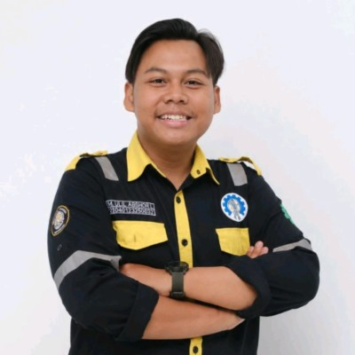
UABased in Semarang, Central Java.
I am an Electrical Engineering student with practical experience in the electrical field and a strong passion for power electrical systems. I am committed to expanding my technical expertise and applying my knowledge to solve real-world engineering challenges.
With teamwork, adaptability and a continuous learning mindset, I thrive in dynamic work environments and enjoy contributing innovative solutions. I am eager to connect with professionals in the electrical industry, exchange knowledge and explore opportunities for collaboration.
Things I built to make machines sense, decide and act.


A prototype waste-sorting system built for a course project. ESP32 and sensors tell metal from non-metal waste, and a real-time web dashboard shows the result.
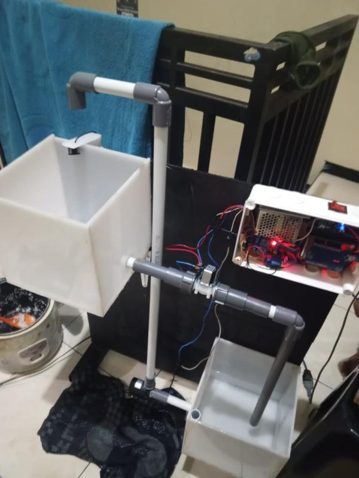
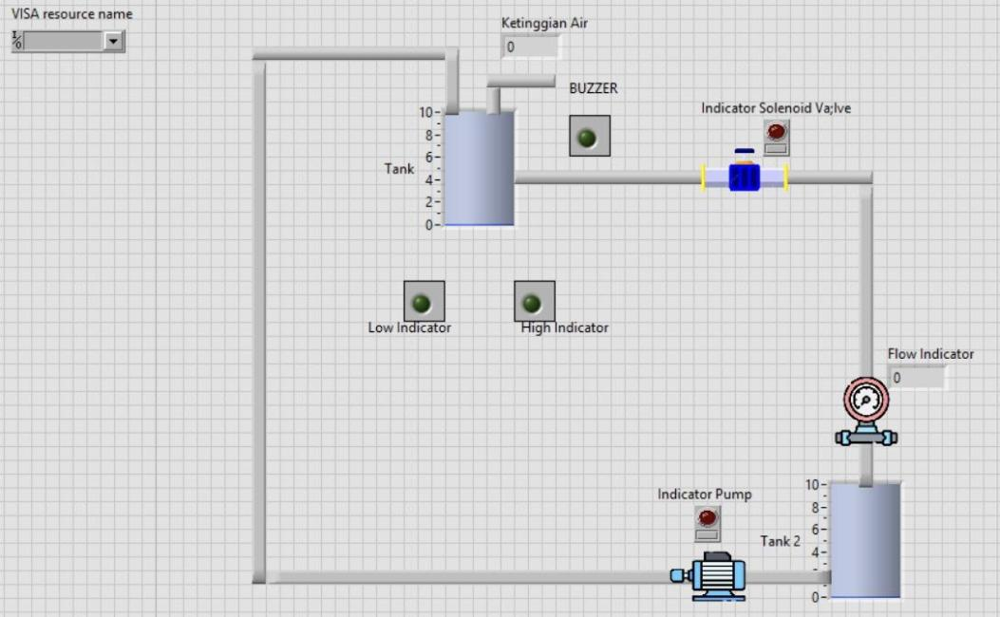
A two-tank water level setup powered by Arduino. Ultrasonic sensors read the level, solenoid valves adjust the flow, and LabVIEW monitors everything live.
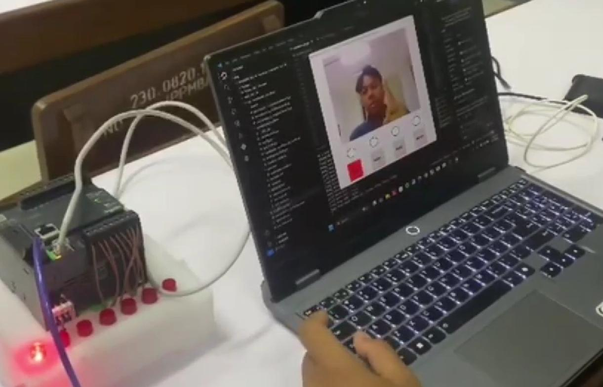
A Schneider PLC controlled by hand gestures. Python and OpenCV read the gesture from a camera and send the command over LAN.
From factory floors and ships to hotel electrical rooms.
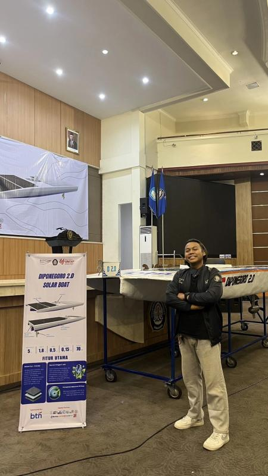
RMTResearch of Marine Technology · Semarang
Part of the electrical team on the "Diponegoro 2.0" ship launch project. Responsible for wiring, electrical system installation and troubleshooting on marine research vessels.
Artotel Gajah Mada · Semarang
Maintained and troubleshot hotel electrical systems to keep facility equipment reliable. Handled air conditioner maintenance and regular panel inspection and cleaning to prevent electrical faults.
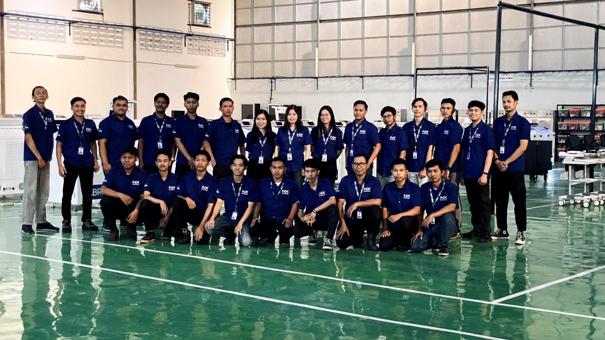
NXPT Norxel Teknologi Indonesia · Semarang
Machine fabrication and electrical wiring for banking equipment. Wired Self-Service Banking (SSB) machines to safety and operating standards and fabricated machine bodies with precision welding.
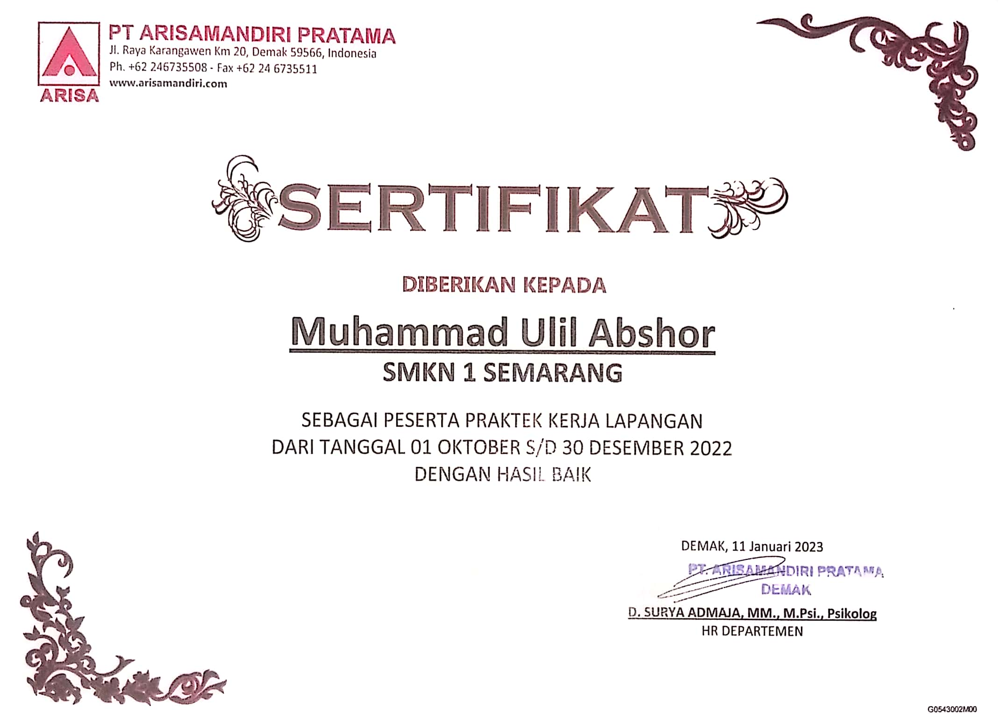
AMArisa Manufacturing · Karangawen
Supported maintenance and process documentation for manufacturing equipment. Serviced powder coating nozzles and wrote standard working instructions for welding.
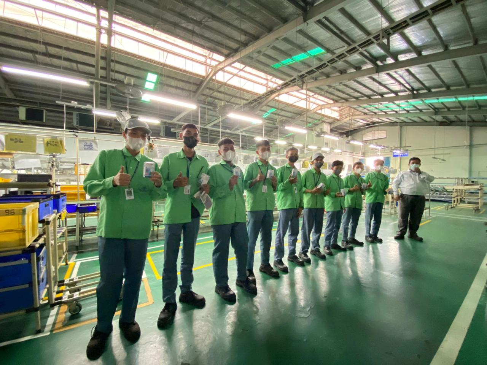
PMPT Panasonic Manufacturing Indonesia · East Jakarta
Ran strapping and vacuum packaging machines and supported assembly and quality control of air conditioning units.
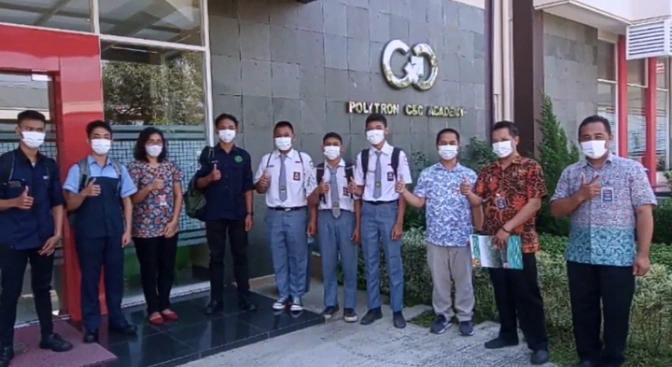
PTPolytron Indonesia · Sayung
Gained hands-on experience in production line setup and in designing performance monitoring systems.
Where I learned leadership and teamwork.
Diponegoro University's mountaineering and nature-lover association. Joined outdoor expeditions and environmental conservation programs that built leadership, teamwork and endurance.
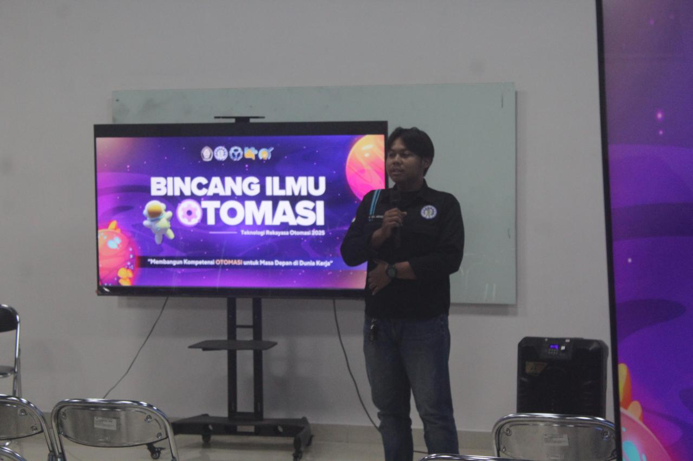
HMChaired the organizing committee of BIO (Bincang Ilmu Otomasi), an automation talk series.
From vocational school to applied science.
Applied Bachelor (S.Tr.) in Automation Engineering Technology
Industrial Automation Engineering (4-year program)